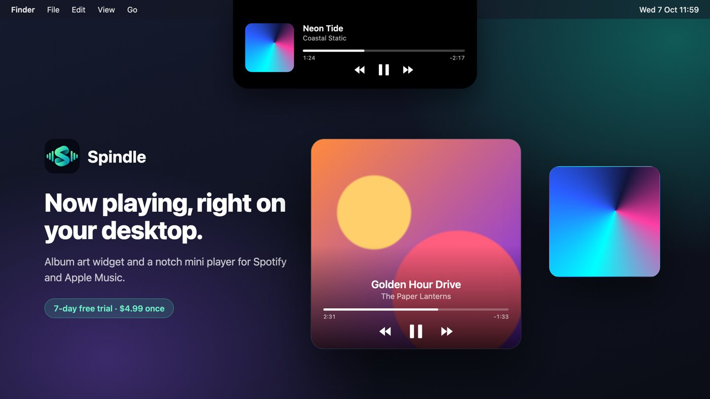

notebook · september 2026 · in progress
Spindle
Can I make the Mac widget I wanted, for less?
A native macOS album-art widget for Spotify and Apple Music, with hover controls and a mini player that lives around the notch.

the idea
Small Mac utilities are often good and slightly too expensive. Spindle is my take on the album-art widget, priced lower.
- 0API keys or logins
- 7day trial before a licence
how it works
-
Listen
AppleScript asks Spotify or Music what's playing every second; no accounts involved.
-
Show
A desktop tile with the cover, controls on hover, and a notch player that expands.
-
Sell
A licence check with a trial, built to work offline.
notes to self
- Swift swallows AppleScript syntax errors into vague runtime failures; test the script on its own first.
made with
SwiftSwiftUIAppKitAppleScript
on nearby pages